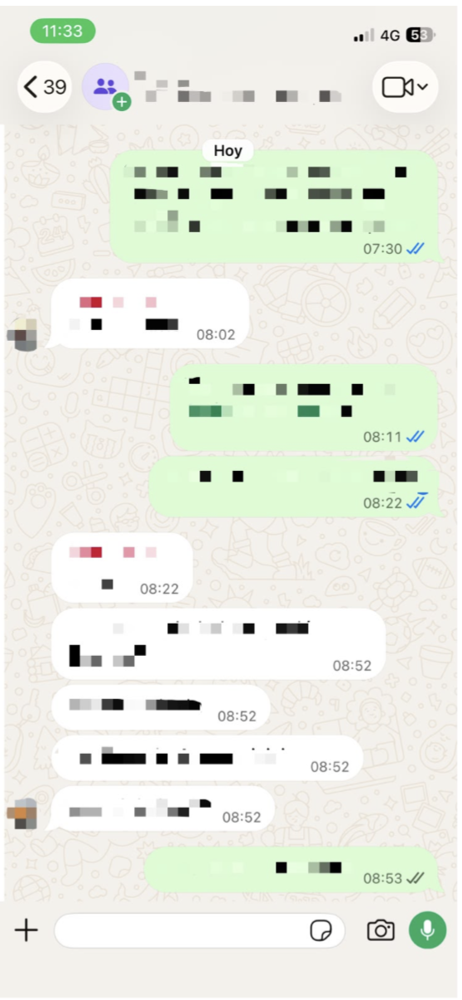
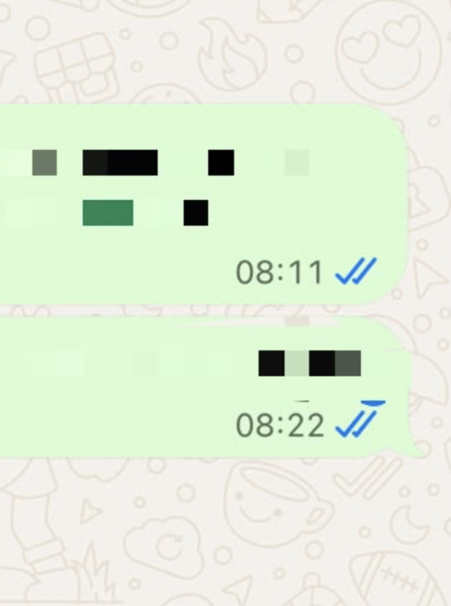

Double check
Confirmación de lectura, llegada del mensaje, doble check. Iconos que confirman la lectura de un mensaje priorizando la inmediatez y trazabilidad sobre la autonomía del usuario.
Es un par de iconos en la esquina inferior de la burbuja del mensaje a la derecha que muestra la lectura, llegada de mensaje cambiando de color y cantidad. Es un mecanismo de notificación totalmente automatizado.
La inmediatez, la trazabilidad y la privacidad del usuario, al tener la información de si llegó, se leyó y cuando el mensaje.
En este caso el que se beneficia es el emisor y la plataforma, ya que reduce la incertidumbre y estimula el “engagement”.
Esto puede dificultar la privacidad, el tiempo de espera para responder mensajes, la separación entre el tiempo laboral y privado. Obligación a responder el mensaje de inmediato al verlo para no dejar a la otra persona con incertidumbre de porque el receptor no responde. Comunicación asincrónica.
Ver el mensaje obliga a responder de inmediato por lo que la disponibilidad del receptor se vuelve obligatoria y hasta permanente. Esto genera un comportamiento de estrés y ansiedad donde el usuario se siente forzado a responder de inmediato.

